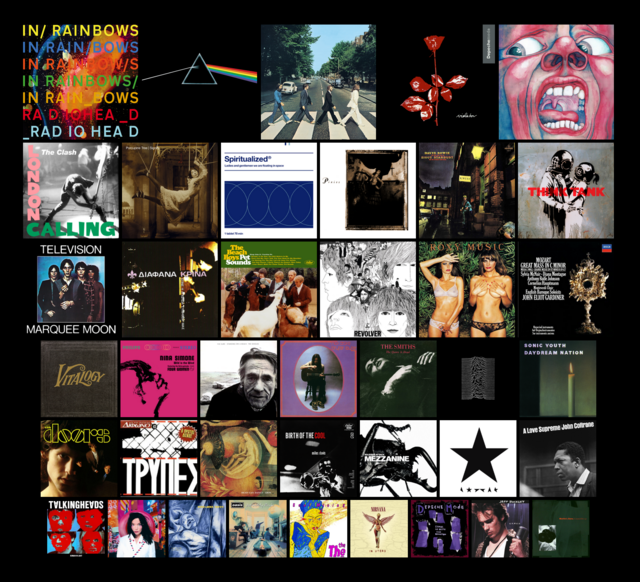

Top Music Albums List
My top 40 albums of all
times
This is a non-definite list…

- Radiohead - In Rainbows
- Pink Floyd - The Dark Side Of The Moon
- The Beatles - Abbey Road (Remastered)
- Depeche Mode - Violator
- King Crimson - In the Court of the Crimson King
- The Clash - London Calling (Remastered)
- Porcupine Tree - Signify
- Spiritualized - Ladies and Gentlemen We Are Floating in
Space
- Pixies - Surfer Rosa
- David Bowie - The Rise and Fall of Ziggy Stardust and the
Spiders from Mars
- Blur - Think Tank
- Television - Marquee Moon
- Diafana Krina - Egine i apolia synithia mas
- The Beach Boys - Pet Sounds
- The Beatles - Revolver
- Roxy Music - Country Life
- Wolfgang Amadeus Mozart - Mozart: Great Mass in C Minor
- Pearl Jam - Vitalogy
- Nina Simone - Wild Is The Wind
- The Cure - Standing On A Beach
- Nick Drake - Bryter Layter
- The Smiths - The Queen Is Dead
- Joy Division - Unknown Pleasures
- Sonic Youth - Daydream Nation
- The Doors - The Doors
- Τρύπες - Trypes
- Dead Can Dance - Aion
- Miles Davis - Birth of the Cool
- Massive Attack - Mezzanine
- David Bowie - Blackstar
- John Coltrane - A Love Supreme
- Talking Heads - Remain In Light
- Björk - Post
- Screaming Trees - Dust
- Oasis - Definitely Maybe
- The The - Soul Mining
- Nirvana - In Utero
- Depeche Mode - Songs of Faith and Devotion
- Jeff Buckley - Grace
- Martin L. Gore - Counterfeit E.P.
References